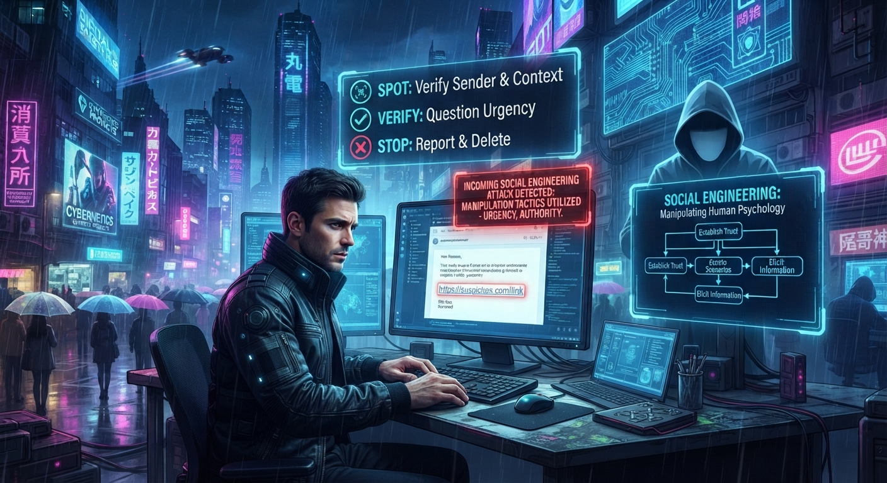

1. Bulk Email Phishing
Mass-distributed emails disguised as banks, streaming platforms, or cloud storage providers claiming your account will be suspended unless you sign in immediately.
DEEP-DIVE SECURITY GUIDE • SOCIAL ENGINEERING
How attackers manipulate human psychology to bypass technical defenses—and how you can spot, verify, and stop deceptive messages before harm occurs.

Phishing is a form of social engineering in which attackers pose as a trusted person, brand, or institution to trick victims into revealing passwords, financial details, or verification codes. Rather than breaking encryption, attackers exploit everyday emotions such as fear, urgency, curiosity, and respect for authority so you act before double-checking.
Modern phishing extends well beyond traditional spam emails across multiple communication channels.
Mass-distributed emails disguised as banks, streaming platforms, or cloud storage providers claiming your account will be suspended unless you sign in immediately.
Targeted messages tailored to a specific individual or organization using personal details gathered from social media or prior data leaks to appear credible.
Deceptive text messages pretending to be parcel couriers, toll agencies, or mobile carriers with shortened links leading to fake payment or login forms.
Fraudulent phone calls using spoofed caller IDs or AI-cloned voices impersonating bank fraud departments or IT support to extract one-time passcodes.
Near-identical copies of legitimate receipts, shared documents, or meeting invites you previously received, where genuine links or attachments are swapped for malicious ones.
Understanding how an attack unfolds helps you interrupt it at any stage.
Attackers research targets or select a believable scenario—such as a failed delivery, security alert, or invoice dispute—to build trust.
The deceptive email, SMS, or call arrives with an urgent call to action designed to trigger an immediate emotional reaction.
Clicking the link opens a lookalike login page that harvests your username, password, and MFA code, or downloads malware onto your device.
Once inside, attackers lock you out, steal sensitive data, or use your compromised account to target your contacts next.
support@paypa1-security-alert.com.
Inspect how multiple warning signs combine inside a typical credential harvesting message: